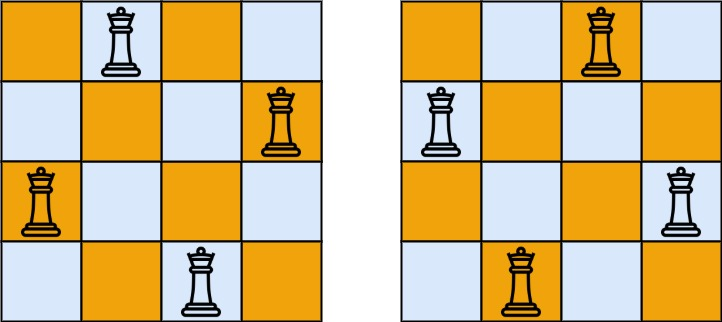

52. N 皇后 II
| 题目信息 | 内容 |
|---|---|
| 难度 | 困难 |
| 核心模式 | 回溯 + 位运算状态压缩 |
| 时间复杂度 | O(n!) |
| 空间复杂度 | O(n) |
题目与约束
n 皇后问题 研究的是如何将 n 个皇后放置在 n × n 的棋盘上，并且使皇后彼此之间不能相互攻击。
给你一个整数 n ，返回 n 皇后问题 不同的解决方案的数量。
示例 1：

输入：n = 4
输出：2
解释：如上图所示，4 皇后问题存在两个不同的解法。
示例 2：
输入：n = 1
输出：1
提示：
1 <= n <= 9
核心不变量
按行逐行放置皇后，用三个位掩码分别记录「列、主对角线、副对角线」上已被攻击的位置；每一行只从剩余的空位中选择一个放置，放下后把三条攻击线按行号推进一位。
完整推导
思路推导
- 直觉与痛点（为什么按行枚举？）
皇后会攻击同一行、同一列、同一对角线。如果按格子枚举，状态会爆炸。关键观察是：每一行只能放一个皇后。于是可以把问题转化成「为第 0、1、…、n-1 行各选一个列号」，从此只需处理列与两条对角线。
- 破局思路（三种攻击线各用一个位掩码）
用一个整数 cols 表示已被占用的列，第 c 位为 1 表示第 c 列已放皇后。主对角线（左上到右下）用一个掩码 diag1，副对角线（右上到左下）用 diag2。当前行所有能放的位置就是 available = ((1<<n) - 1) & ~(cols | diag1 | diag2)，其中高位掩码 (1<<n)-1 限制在 n 位内。
- 关键追问（掩码怎么随行推进？）
在某一列 pos 放下皇后后，下移一行时：列掩码变为 cols | pos；主对角线掩码整体左移一位 (diag1 | pos) << 1（因为下一行同一主对角线的列号会减 1，用左移模拟）；副对角线整体右移一位 (diag2 | pos) >> 1。这样行号每加一，两条对角线的影响就自动平移到正确列。枚举 available 中的每一个 1（pos = available & -available，再用 available &= available - 1 消掉最低位），递归下一行；当行号到达 n 说明找到一个合法解，计数加一。例：n=4 时按此能数出 2 个解。
Java 实现（totalNQueens）
class Solution {
private int count = 0;
public int totalNQueens(int n) {
backtrack(n, 0, 0, 0, 0);
return count;
}
/**
* @param row 当前行号
* @param cols 列占用掩码
* @param diag1 主对角线占用掩码
* @param diag2 副对角线占用掩码
*/
private void backtrack(int n, int row, int cols, int diag1, int diag2) {
if (row == n) { // n 行都放好，得到一个解
count++;
return;
}
// 只保留低 n 位中所有可放置的位置
int available = ((1 << n) - 1) & ~(cols | diag1 | diag2);
while (available != 0) {
int pos = available & (-available); // 取最低位的 1
available &= (available - 1); // 消去最低位的 1
backtrack(n, row + 1,
cols | pos,
(diag1 | pos) << 1, // 主对角线随行下移
(diag2 | pos) >> 1); // 副对角线随行下移
}
}
}
复杂度
- 时间：
O(n!)。第一行有 n 种放法，之后每行可用位置迅速减少，实际是回溯树的规模，上界为O(n!)（n ≤ 9完全可接受）。 - 空间：
O(n)，递归深度为 n，位运算只用了常数个整数。
易错点与扩展（面试高频考点）
- 掩码要限制在 n 位内：
~(...)会把高位全部置 1，必须与(1 << n) - 1相与，否则会枚举到越界列。 - 两条对角线的移位方向相反：主对角线
<< 1、副对角线>> 1，写反会漏判或误判。 - 取最低位与清除最低位要配套：
pos = available & (-available)取位，available &= available - 1去位；只取不清会死循环。 - 本题只问方案数：因为不需要输出棋盘，用计数即可；若要输出所有棋盘（51 题），则要额外维护每行的列选择并回溯。
- 位运算与集合写法等价：也可用三个
HashSet记录列c、r+c、r-c，逻辑更直观但常数更大；位运算在小 n 下更快、更简洁。
力扣原题
C++ 实现
class Solution {
public:
int totalNQueens(int n) {
count = 0;
backtrack(n, 0, 0, 0, 0);
return count;
}
private:
int count;
void backtrack(int n, int row, int cols, int diag1, int diag2) {
if (row == n) {
++count;
return;
}
int available = ((1 << n) - 1) & ~(cols | diag1 | diag2);
while (available) {
int pos = available & (-available); // 最低位的 1
available &= (available - 1); // 清除最低位的 1
backtrack(n, row + 1,
cols | pos,
(diag1 | pos) << 1,
(diag2 | pos) >> 1);
}
}
};
Python 实现
class Solution:
def totalNQueens(self, n: int) -> int:
self.count = 0
def backtrack(row: int, cols: int, diag1: int, diag2: int) -> None:
if row == n:
self.count += 1
return
available = ((1 << n) - 1) & ~(cols | diag1 | diag2)
while available:
pos = available & (-available) # 最低位的 1
available &= available - 1 # 清除最低位的 1
backtrack(row + 1,
cols | pos,
(diag1 | pos) << 1,
(diag2 | pos) >> 1)
backtrack(0, 0, 0, 0)
return self.count